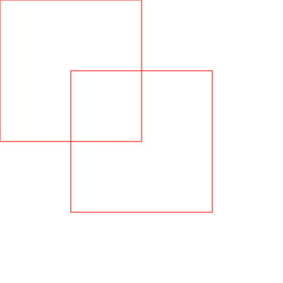

w12_hw <<
Previous Next >> w14_hw
w13_hw
1.交疊雙框
from browser import html
from browser import document as doc
# 利用 html 建立 canvas 超文件物件
canvas = html.CANVAS(width = 400, height = 400)
brython_div = doc["brython_div1"]
brython_div <= canvas
# 每一格的 pixel 數
gs = 200
# gs*tc = canvas width and height
ctx = canvas.getContext("2d")
width = 1
height = 1
for i in range(width):
for j in range(height):
#dRect(i*gs,j*gs,gs,gs,1,"lightgrey")
ctx.lineWidth = 1
ctx.strokeStyle = '#ff0000'
ctx.beginPath();
ctx.rect(i*gs,j*gs,gs,gs)
ctx.stroke();
offset_x = 100
offset_y = 100
for i in range(width):
for j in range(height):
ctx.lineWidth = 1
ctx.strokeStyle = '#ff0000'
ctx.beginPath()
ctx.rect(i * gs + offset_x, j * gs + offset_y, gs, gs)
ctx.stroke()

2.外加兩外切圓
from browser import html
from browser import document as doc
# 建立 canvas 元素
canvas = html.CANVAS(width=500, height=500)
brython_div = doc["brython_div1"]
brython_div <= canvas
# 定義圓心和半徑
x1, y1 = 200, 200 # 第一個圓的圓心
x2, y2 = 300, 300 # 第二個圓的圓心
radius = 141.4 # 圓的半徑
ctx = canvas.getContext("2d")
# === 繪製第一個圓 ===
ctx.beginPath()
ctx.arc(x1, y1, radius, 0, 2 * 3.14159)
ctx.lineWidth = 2
ctx.strokeStyle = "black"
ctx.stroke()
# === 繪製第二個圓 ===
ctx.beginPath()
ctx.arc(x2, y2, radius, 0, 2 * 3.14159)
ctx.lineWidth = 2
ctx.strokeStyle = "black"
ctx.stroke()
# === 繪製正方形框架 ===
# 第一個正方形
ctx.lineWidth = 2
ctx.strokeStyle = "red"
ctx.beginPath()
ctx.rect(100, 100, 200, 200)
ctx.stroke()
# 第二個正方形
ctx.beginPath()
ctx.rect(200, 200, 200, 200)
ctx.stroke()
3.圖形上色
from browser import html
from browser import document as doc
# 建立 canvas 元素
canvas = html.CANVAS(width=500, height=500)
brython_div = doc["brython_div1"]
brython_div <= canvas
# 定義圓心和半徑
x1, y1 = 200, 200 # 第一個圓的圓心
x2, y2 = 300, 300 # 第二個圓的圓心
radius = 141.4 # 外切圓半徑
ctx = canvas.getContext("2d")
# === 填充兩個圓的內容 ===
# 第一個圓填充黃色
ctx.beginPath()
ctx.arc(x1, y1, radius, 0, 2 * 3.14159)
ctx.fillStyle = "mistyrose"
ctx.fill()
# 第二個圓填充淺藍色
ctx.beginPath()
ctx.arc(x2, y2, radius, 0, 2 * 3.14159)
ctx.fillStyle = "lightblue"
ctx.fill()
# 填充方形交疊區域
ctx.beginPath()
ctx.rect(200, 200, 100, 100)
ctx.fillStyle = "orange"
ctx.fill()
# 填充第一個方形其他部分
ctx.beginPath()
ctx.rect(100, 100, 100, 100)
ctx.fillStyle = "blue"
ctx.fill()
ctx.beginPath()
ctx.rect(100, 200, 100, 100)
ctx.fillStyle = "darkblue"
ctx.fill()
ctx.beginPath()
ctx.rect(200, 100, 100, 100)
ctx.fillStyle = "aqua"
ctx.fill()
# 填充第二個方形其他部分
ctx.beginPath()
ctx.rect(300, 200, 100, 100)
ctx.fillStyle = "coral"
ctx.fill()
ctx.beginPath()
ctx.rect(200, 300, 100, 100)
ctx.fillStyle = "red"
ctx.fill()
ctx.beginPath()
ctx.rect(300, 300, 100, 100)
ctx.fillStyle = "darkorchid"
ctx.fill()
# === 繪製外切圓與紅色方框邊框 ===
# 繪製第一個外切圓
ctx.lineWidth = 2
ctx.strokeStyle = "black"
ctx.beginPath()
ctx.arc(x1, y1, radius, 0, 2 * 3.14159)
ctx.stroke()
# 繪製第二個外切圓
ctx.beginPath()
ctx.arc(x2, y2, radius, 0, 2 * 3.14159)
ctx.stroke()
# 繪製紅色方框邊框
ctx.strokeStyle = "white"
# 第一個紅色方形
ctx.beginPath()
ctx.rect(100, 100, 200, 200)
ctx.stroke()
# 第二個紅色方形
ctx.beginPath()
ctx.rect(200, 200, 200, 200)
ctx.stroke()
w12_hw <<
Previous Next >> w14_hw